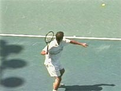
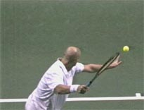
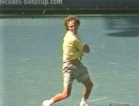
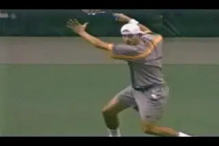
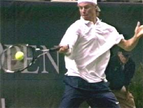

Building the Modern Forehand-Shoulder Rotation¶
Building the Modern Forehand:
Shoulder Rotation
John Yandell
In the last article we took a close look at how the grip affects the angle of the racket face on the forward swing in the modern forehand. In this article we'll move on to the second critical factor, shoulder rotation and how it varies depending on grip style.
The second factor to we need to understand across the grip styles is shoulder rotation. In the first article in this series, we saw that that one commonality across all the grips was how far the top players turned their shoulders in the preparation phase. (Click here for Part 1) Virtually every top pro turns until his shoulders are slightly more than square to the baseline and the net, or a little more than 90 degrees.


The shoulder turn is a key commonality we identified across the grip styles.
The shoulders may be same angle at the completion of the turn for all the grips, but this changes in the forward swing. The total amount of rotation and the position of the shoulders at the contact and at the finish differ significantly as the grips become more extreme.
Basically, the more extreme the grip, the more total shoulder rotation. If we look at great pro players with a variety of grip styles, we can see a virtual straight line continuum from Pete Sampras to Andre Agassi to Andy Roddick.

Pete turns about 90 degrees to the baseline. His forward rotation is the same, with the contact in the middle at about 45 degrees.
With a modern eastern forehand like Sampras, the shoulders start parallel to the baseline in the ready position. They turn sideways about 90 degrees or a little more in the preparation. They rotate back through the hit that same amount, 90 degrees plus, to reach the finish. The contact point is midway through this rotational pattern, with the shoulders at about 45 degrees to the net, give or take.
This can vary a depending on the stance and the line of the shot, sometimes Pete is more open with the shoulders, maybe about 30 degrees. But the basic pattern holds. (It's exactly the same as when Robert Lansdorp first trained him at age 8. Click here to see the amazing animation of Pete's forehand then.)

Agassi has slightly more total rotation than Pete, and his shoulders have rotated further forward at contact-about 30 degrees to the baseline.
If we look at a player with a mild semi-western grip like Agassi, we can see that there is more rotation. His turn is the same as Pete's. But Agassi's overall rotation is greater because he rotates further in his forward swing.

Guga and Hewitt at full shoulder rotation on the forehand finish.
Instead of ending with his shoulders parallel to the net, he continues about another 30 degrees. His front shoulder finishes back across the baseline, whereas Pete's stops roughly parallel to the baseline. So if Pete's forward total forward rotation is around 90 degrees, Agassi's is more like 120 degrees.

With the extreme grips the forward shoulder rotation can reach 180\ degrees-double that of classical players.
Agassi has slightly more forward rotation, but what is interesting is that he still makes contact halfway through the total rotational pattern. Pete makes contact at about 45 degrees to the baseline Agassi's shoulders rotate a little further forward. He usually makes contact with his shoulders about 30 degrees to the baseline. But the contact point remains halfway through the forward rotational pattern.
Next on the continuum are players like Guga, Hewitt, and Andy Roddick. Again their turns are similar to Pete's or Agassi's. But the difference is they all have much more forward rotation.
Pete rotates forward a total of about 90 degrees. Agassi rotates about 120 degrees. The more extreme players rotate forward as much as 180 degrees in their basic forehands. At the end of the extreme forehand, the back shoulder can come all the way around until it is literally pointing forward to the net.
So as we go from a classic eastern to an extreme semi-western, the shoulder rotation basically doubles. But what about the contact point? In one important sense it's not different for the extreme grips. It's still in the middle of the total rotational pattern.

Video demonstration — the original video for this article was hosted on TennisPlayer.net.
Extreme players make contact with their shoulders parallel the baseline-the midpoint of their rotational pattern.
This means that the contact point is with the shoulders "open" or parallel to the baseline. This is the point where Pete's rotation usually ends. Agassi still has another 30 degrees to go. But at contact the shoulders of the extreme players still have as much as 90 degrees to go. They all meet the ball half way around, it's just that the less extreme players have less total rotation.
These differences in the rotational patterns across the grip styles have lead to a lot of confusion in coaching and teaching. Extreme players are often criticized for being over-rotated or too "open," when actually their positions are perfectly correct for their grip style.
Guga demonstrates the extreme grip shoulder position at contact, at the midpoint of the total body rotation.
One writer on another instructional site, who also promotes a swiveling training board, believes that there is some kind of cosmic, geometric relationship between the angle of the shoulders and the "correct" contact point on the forehand.
This magic angle is supposed to be with the shoulders 45degrees to the baseline, regardless of grip. The problem is this is not an accurate description of most players on the tour. A player like Sampras may fit, but it's inaccurate to force this concept on other players with different grips.
Unfortunately, he has to fudge the video to establish that the 45 angle is "universal." In one of his articles there's an image of Lleyton Hewitt's forehand frozen a few frames before contact to demonstrate the "magic" angle. The problem is he hasn't hit the ball. Run the same video a few frames further and you'll see the correct "open" torso contact position for the more extreme forehand grip.

Video demonstration — the original video for this article was hosted on TennisPlayer.net. Another look at Hewitt's contact point. Old beliefs about torso rotation die hard.
The fact is old beliefs and cherished theories die hard. And some coaches will go to great lengths to defend them--especially if these beliefs are connected to a lot of product marketing hype.
But even experienced coaches with no commercial agenda to push sometimes criticize modern players thinking they are opening and decimating their power. In reality, understanding appropriate shoulder rotation--as with the racket face angle--requires an understanding of how the grip determines the key characteristics of the forward swing.
Next let's look at the third factor: hand and arm rotation, the most complex and one of the most varied and confusing elements in the modern forehand.

John Yandell is widely acknowledged as one of the leading videographers and students of the modern game of professional tennis. His high speed filming for Advanced Tennis and TPA have provided new visual resources that have changed the way the game is studied and understood by both players and coaches. He has done personal video analysis for hundreds of high level competitive players, including Justine Henin-Hardenne, Taylor Dent and John McEnroe, among others.
In addition to his role as Editor of TPA he is the author of the critically acclaimed book Visual Tennis. The John Yandell Tennis School is located in San Francisco, California.